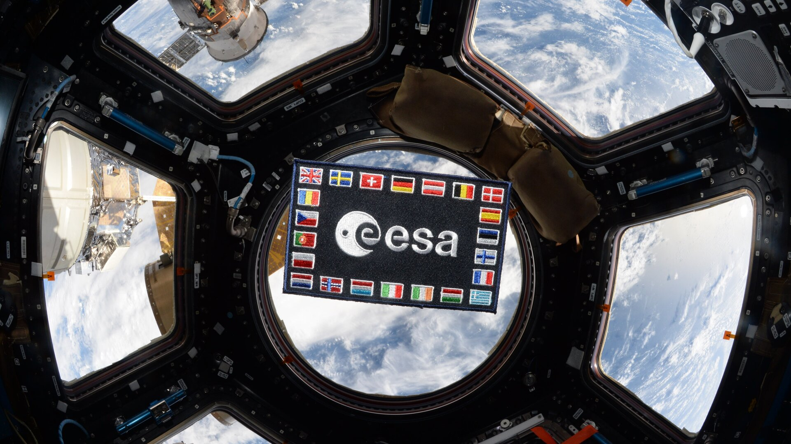
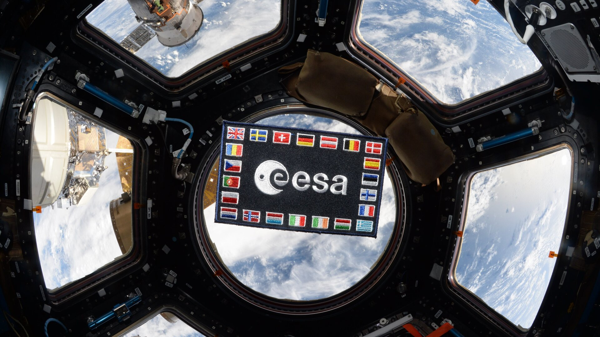

L'ESA : faits et chiffres
L'Agence spatiale européenne (European Space Agency - ESA) représente pour l'Europe une porte d'accès à l'espace. Sa mission consiste à façonner les activités de développement des capacités spatiales européennes et à faire en sorte que les citoyens européens continuent à bénéficier des investissements réalisés dans le domaine spatial.
L'ESA est une organisation internationale qui compte 22 États membres. En coordonnant les ressources financières et intellectuelles de ses membres, l'ESA peut entreprendre des programmes et des activités qui vont largement au-delà de ce que pourrait réaliser chacun de ces pays à titre individuel.
Que fait l’ESA ?
 

Access the video
L'ESA a pour mission d'élaborer le programme spatial européen et de le mener à bien. Les projets de l'Agence sont conçus pour en apprendre davantage sur la Terre, sur son environnement spatial immédiat, sur le Système Solaire et sur l'Univers ainsi que pour mettre au point des technologies et services satellitaires et pour promouvoir les industries européennes.
L'ESA travaille également en étroite collaboration avec des organisations spatiales hors d'Europe de manière à ce que les bienfaits de l'espace profitent à l'humanité entière.
Qui fait partie de l’ESA ?

Les 22 États membres de l'ESA sont l'Allemagne, l'Autriche, la Belgique, le Danemark, l'Espagne, l'Estonie, la Finlande, la France, la Grèce, la Hongrie, l'Irlande, l'Italie, le Luxembourg, la Norvège, les Pays-Bas, la Pologne, le Portugal, la Roumanie, le Royaume-Uni, la Suède, la République Tchèque et la Suisse.
La Slovénie a le statut de membre associé. Le Canada participe à certains programmes de l’ESA au titre d’un accord de coopération. La Bulgarie, Chypre, la Croatie, la Lettonie, la Lituanie, Malte et la Slovaquie ont des accords de coopération avec l'ESA.
Comme il ressort de cette liste, tous les pays membres de l'Union Européenne ne sont pas membres de l'ESA, et inversement, tous les États membres de l'ESA ne sont pas membres de l'UE. L'ESA est une organisation entièrement indépendante bien qu'elle entretienne des relations étroites avec l'UE en vertu d'un accord-cadre conclu entre les deux organisations. L'ESA et l'UE partagent une même stratégie européenne pour l'espace et élaborent ensemble une politique spatiale européenne.
Où se trouve l’ESA ?
Le siège de l'ESA se trouve à Paris et c'est donc à Paris que se décident ses politiques et ses programmes. Toutefois, l'ESA dispose dans différents pays d'Europe de centres qui assument chacun des responsabilités bien définies.
L'ESTEC, Centre européen de technologie spatiale, est le centre où sont conçus la plupart des véhicules spatiaux de l'ESA et de ses activités de développement technologique. Il est implanté à Noordwijk (Pays-Bas).
L'ESOC, Centre européen d'opérations spatiales, est chargé des opérations de commande et contrôle en orbite des satellites de l'ESA. Il se situe à Darmstadt (Allemagne).
L'EAC, Centre des astronautes européens, forme les astronautes aux futures missions. Il se trouve à Cologne (Allemagne).
L'ESRIN, Institut européen de recherches spatiales, est basé à Frascati, près de Rome (Italie). Ses responsabilités comprennent la collecte, le stockage et la distribution des données satellitaires aux partenaires de l'ESA ainsi qu'une fonction de centre des technologies de l'information de l'Agence.
L'ESAC, Centre européen de l'astronomie spatiale, se trouve à Villafranca (Espagne). Il est responsable pour la collecte, l'archivage et la distribution de données issues des missions astronomiques et planétaires.
L'ECSAT, Centre européen des applications spatiales et des télécommunications, implanté à Harwell (Royaume-Uni).
L'ESEC, Centre européen de sécurité et d'éducation spatiale, implanté à Redu (Belgique).
L'ESA dispose en outre de bureaux de liaison en Belgique, aux États-Unis et en Russie, d'une base de lancement en Guyane et de stations sol et stations de poursuite dans différentes régions du monde.
Combien de personnes travaillent pour l’ESA ?
2200 personnes environ travaillent pour l'ESA; ce personnel hautement qualifié est issu de tous ses États membres et compte des scientifiques, des ingénieurs, des spécialistes des technologies de l'information ainsi que du personnel administratif.
Comment l'ESA est-elle financée ?
Les activités obligatoires de l'ESA (programmes de sciences spatiales et budget général) sont financées par des contributions financières que versent tous les États membres et qui sont calculées en fonction du produit national brut de chacun.
L'ESA mène en outre un certain nombre de programmes facultatifs. Chaque pays décide des programmes facultatifs auxquels il souhaite participer et du montant de ses contributions à chacun de ces programmes.
A combien s’élève le budget de l’ESA ?
Le budget de l'ESA pour 2021 est de 6,49 milliards d'euros.
L'ESA fonctionne sur la base d'un "retour géographique", ce qui signifie qu'elle investit dans chaque État membre, sous forme de contrats attribués à son industrie pour la réalisation d'activités spatiales, un montant équivalant à peu près à la contribution de ce pays.
Combien dépense chaque Européen pour financer l'ESA ?
En Europe, les investissements consacrés aux activités spatiales sont très faibles si on les ramène au nombre d'habitants : pour financer les programmes spatiaux, chaque citoyen d'un État membre de l'ESA verse au fisc environ le prix d'un ticket de cinéma.
Aux États-Unis, les investissements consacrés aux activités spatiales civiles sont presque quatre fois plus élevés.
Comment fonctionne l’ESA ?
Le Conseil de l'ESA est l'instance dirigeante de l'organisation. Il fixe les lignes directrices à partir desquelles l'Agence élabore le programme spatial européen. Chaque État membre est représenté au sein du Conseil et y dispose d'une voix, quelle que soit sa taille ou sa contribution financière.
Le Conseil élit tous les quatre ans un Directeur général à la tête de l'Agence. Chacun des secteurs d'activité de l'ESA correspond à une Direction qui relève du Directeur général. Actuellement, le Directeur général de l'ESA est Josef Aschbacher.
Pour plus d'informations:
ESA HQ Bertrand - Département de communication
24 rue du Général Bertrand
CS 30798
75345 Paris CEDEX 7
France
Tel: +33 1 53 69 76 54
Fax: +33 1 53 69 75 60